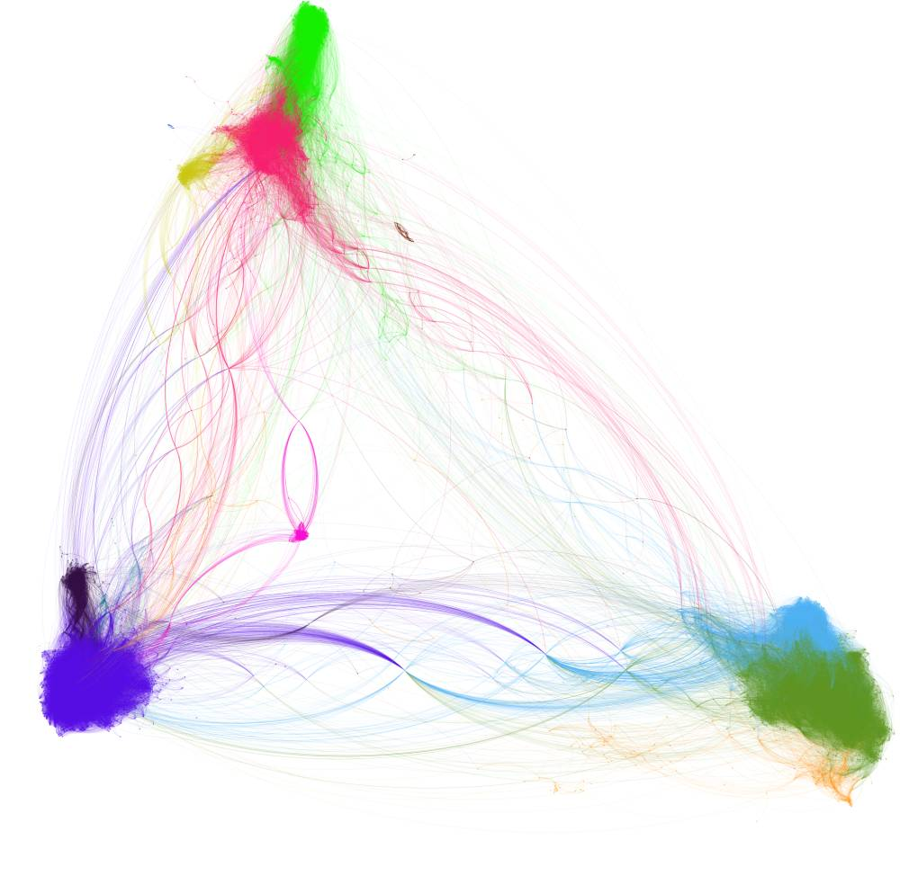

Clement Levallois
@seinecle
Covid-19 on Twitter: A study of actors, their relations and their key topics

On Slideshare:
https://www.slideshare.net/seinecle/covid-actors-relations-and-topics-on-twitter-as-of-march-30-2020
Download the pdf directly
here
Published on March 31, 2020 by Clément Levallois, Associate Professor at emlyon business school
Based on the methodology published in (
free pdf download
):
Benabdelkrim, M., Levallois, C., Savinien, J., & Robardet, C. (2020). Opening Fields: A Methodological Contribution to the Identification of Heterogeneous Actors in Unbounded Relational Orders. M@n@gement, 23(1), 4-18.
https://doi.org/10.37725/mgmt.v23.4245
Contact for high res pictures, research queries etc: levallois@em-lyon.com or @seinecle on Twitter